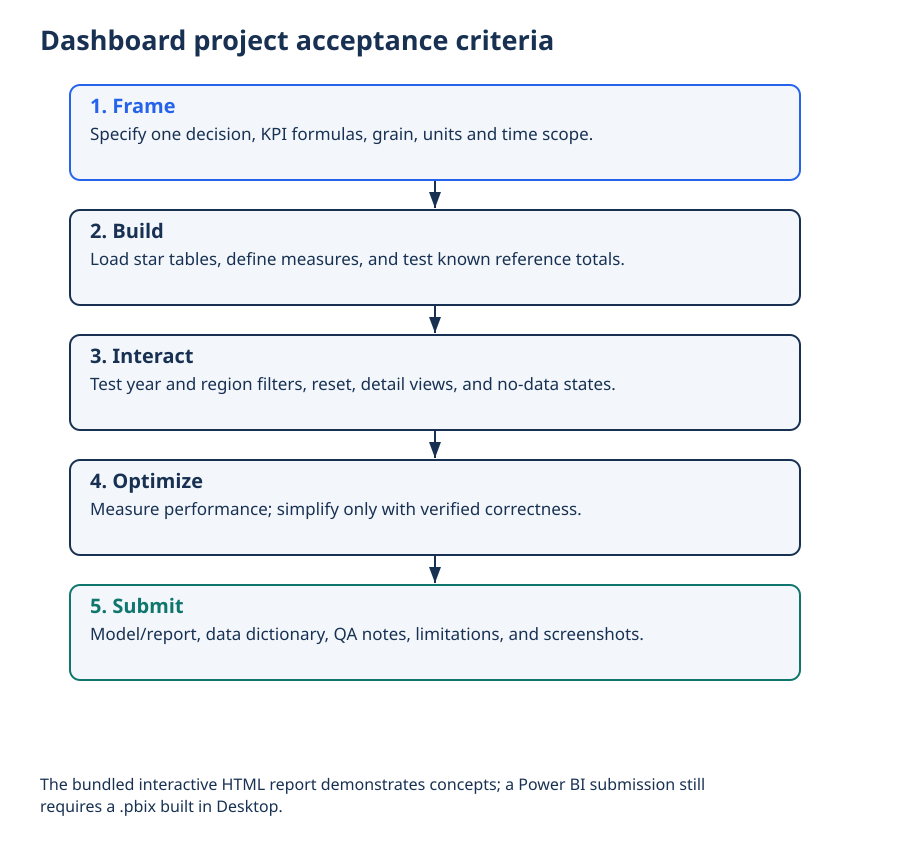

Lecture 26: Dashboard Design Project
Apply Module 5 end-to-end: build an interactive dashboard with a clean star model, core and advanced DAX measures, and performance-aware design — in this course.
1. Learning Objectives
- 1 Scope a dashboard from a business decision and KPIs (link to L4 framing).
- 2 Implement a star schema with correct relationships in Power BI.
- 3 Create measures (SUM, ratios, YTD/YoY, % of total) that respond to slicers.
- 4 Design a clear visual hierarchy and navigation for one page (or two).
- 5 Apply a performance checklist before submission.
2. Project Brief
Scenario: A retail (or accidents / education) operations lead needs a weekly view of performance: what is the trend, where are the gaps, and which segments need attention?
You will deliver:
- A Power BI model (star schema) with at least one fact and three dimensions (including Date)
- Measures: Total, Count, Average or ratio, YTD or prior period, % of total
- One interactive report page with slicers, KPI cards, trend, and breakdown
- A short write-up: decision, KPIs, grain, and one performance choice you made
3. Build Workflow
- Frame — decision, analytical questions, KPIs (L4)
- Model — fact grain, dimensions, 1:* relationships (L22)
- Measures — base aggregates, CALCULATE, time intelligence (L23–L24)
- Visuals — KPI cards, trend, breakdown, slicers (Module 4)
- Optimize — remove unused fields, check filters (L25)
4. Required Measures (Minimum)
Total Sales = SUM ( Sales[NetRevenue] )
Order Count = DISTINCTCOUNT ( Sales[OrderID] )
Average Order Value = DIVIDE ( [Total Sales], [Order Count] )
Sales YTD = TOTALYTD ( [Total Sales], DimDate[Date] )
Sales Share All Regions =
DIVIDE (
[Total Sales],
CALCULATE ( [Total Sales], REMOVEFILTERS ( DimRegion[Region] ) )
)Adapt table/column names to your dataset. Document any substitute measures.
5. Page Layout Guidance
- Top: title + 3–4 KPI cards (current value + optional comparison)
- Filters: date range, region/category slicers (left or top)
- Main: trend over time + one breakdown (bar or matrix)
- Detail: optional table for drill; keep density readable
6. Rubric (Suggested Marking)
| Criterion | Weight | Looks like |
|---|---|---|
| Model quality | 25% | Clear grain, star, correct relationships |
| DAX measures | 25% | Required measures work with slicers |
| Visual design | 20% | Hierarchy, labels, readable layout |
| Interactivity | 15% | Slicers, cross-filter, meaningful defaults |
| Write-up & performance | 15% | Decision/KPIs documented; optimization note |
7. Hands-on Lab / Submission Checklist
- ☐ Decision and KPIs written (5–8 lines)
- ☐ Star model with Date + ≥2 other dimensions
- ☐ Measures: total, count, ratio, YTD or prior, % of total
- ☐ One report page with cards + trend + breakdown + slicers
- ☐ Unused columns removed or hidden; filter direction checked
- ☐ Short reflection: one modeling choice and one performance choice
8. Viva Defense Prompts
- What is the grain of your fact table?
- Walk through how one CALCULATE measure changes with a slicer.
- Why did you choose these visuals for this decision?
- What would break if the date table were incomplete?
9. Knowledge Check
Q1. First step of the dashboard project should be:
Q2. A complete Module 5 deliverable includes:
10. Cheat Sheet
- Frame → Model → Measures → Visuals → Optimize
- Minimum measures: total · count · ratio · YTD/prior · % of total
- Layout: KPIs top · slicers · trend · breakdown
- Defend grain, one CALCULATE, and one performance choice in viva
11. Summary
- Module 5 ends with a working interactive dashboard, not only theory.
- Model quality and DAX correctness matter as much as chart choice.
- Document decisions for the viva and for future you.
12. What’s Next
Module 6 — Capstone begins with Lecture 27 (Ethics & Project Proposal), scaling these skills into a full industry-style analytics project.
Worked practice: Deliver a reconciled report
Build the retail semantic model, apply all base measures and accessible interactions, and compare cards and annual totals to reference_totals.json. Document refresh and access.
Interpretation check: A passing screenshot is insufficient: test multiple filters, distinct order counts, margins, dates and security. The browser report supports exploration; Desktop is required to validate actual DAX.
Setup, all labs, datasets, DAX measures and capstone guidance · Interactive retail teaching report
A dashboard organized around a decision

Interpret: Why show filter context?
The same measure changes under different dates and segments.
Read diagram labels (mobile text)
- Decision: which region needs investigation?
- Revenue KPI
- Definition + period
- Profit margin
- Ratio of totals
- Distinct orders
- OrderID grain
- Monthly trend
- Context for change
- Region comparison
- Identify exceptions
- Filters: Year / Region · Source, units, definitions, limitations
- A dashboard organized around a decision
- Conceptual wireframe, not a software screenshot. KPI definitions and filter context make numbers
- interpretable.
Dashboard project acceptance criteria


Interpret: What proves the dashboard total is correct?
Reconcile it to source/Python reference totals under identical filters.
Read diagram labels (mobile text)
- Dashboard project acceptance criteria
- 1. Frame
- Specify one decision, KPI formulas, grain, units and time scope.
- 2. Build
- Load star tables, define measures, and test known reference totals.
- 3. Interact
- Test year and region filters, reset, detail views, and no-data states.
- 4. Optimize
- Measure performance; simplify only with verified correctness.
- 5. Submit
- Model/report, data dictionary, QA notes, limitations, and screenshots.
- The bundled interactive HTML report demonstrates concepts; a Power BI submission still
- requires a .pbix built in Desktop.
Your reading progress
Completion is self-reported reading progress, not a mastery score. Use the lab and interpretation checks to assess understanding.